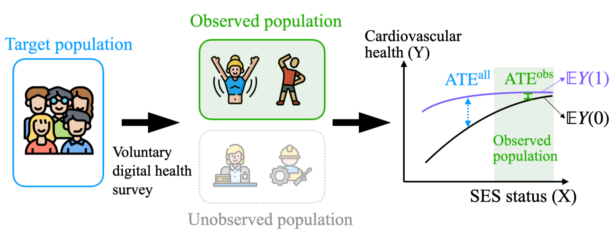
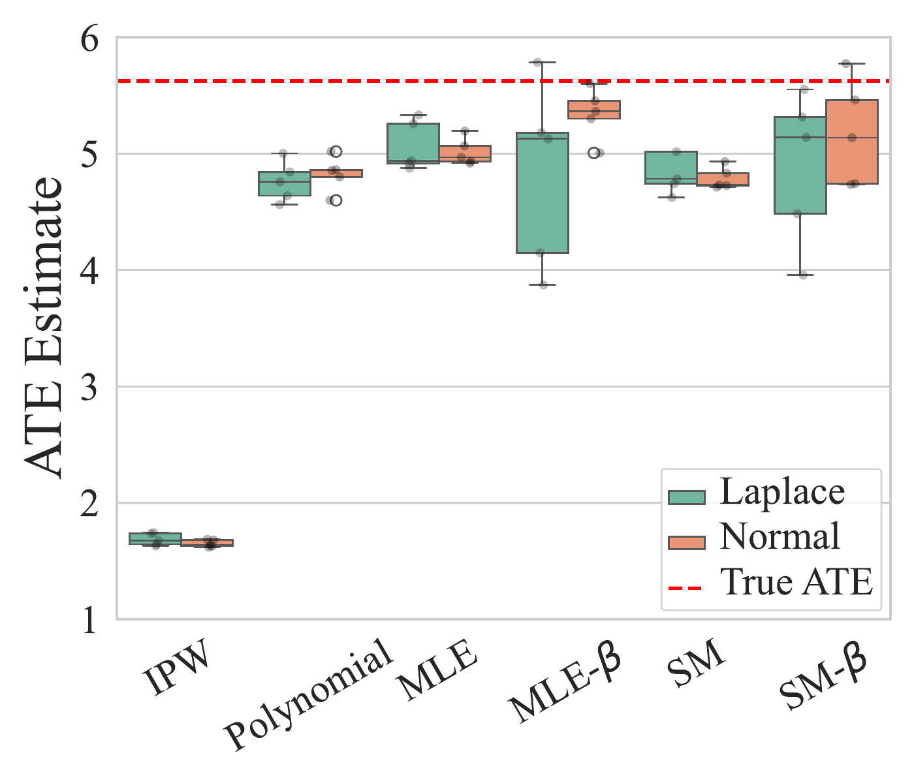
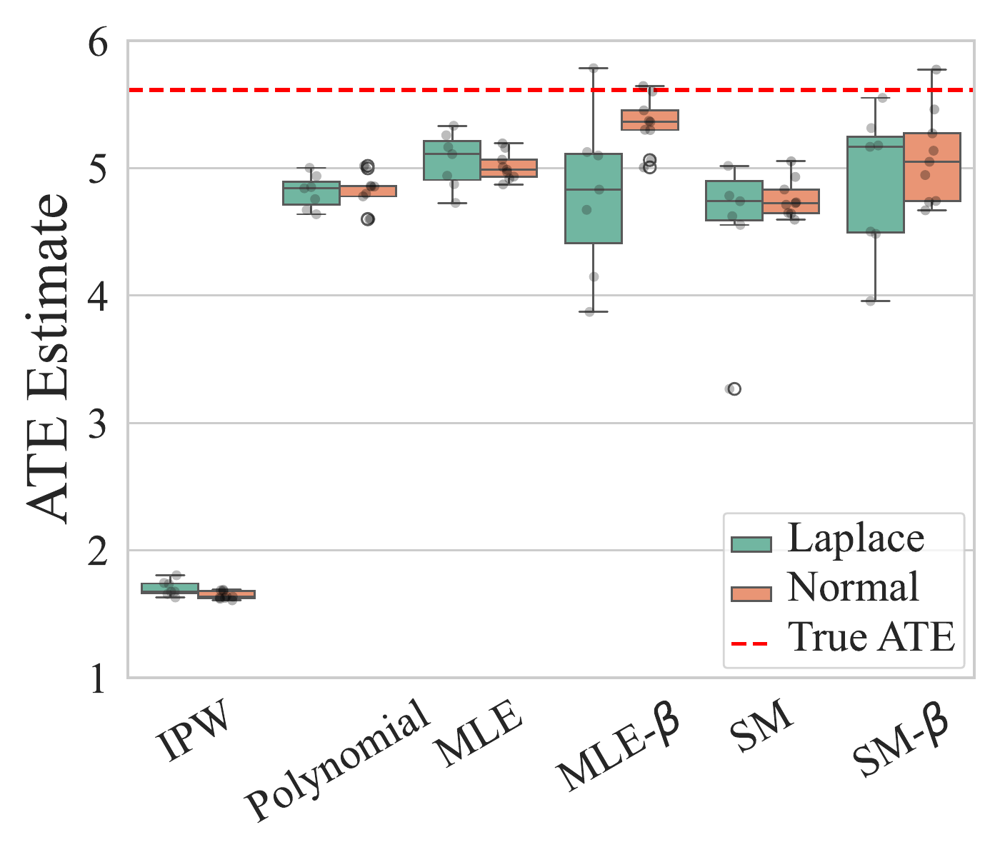
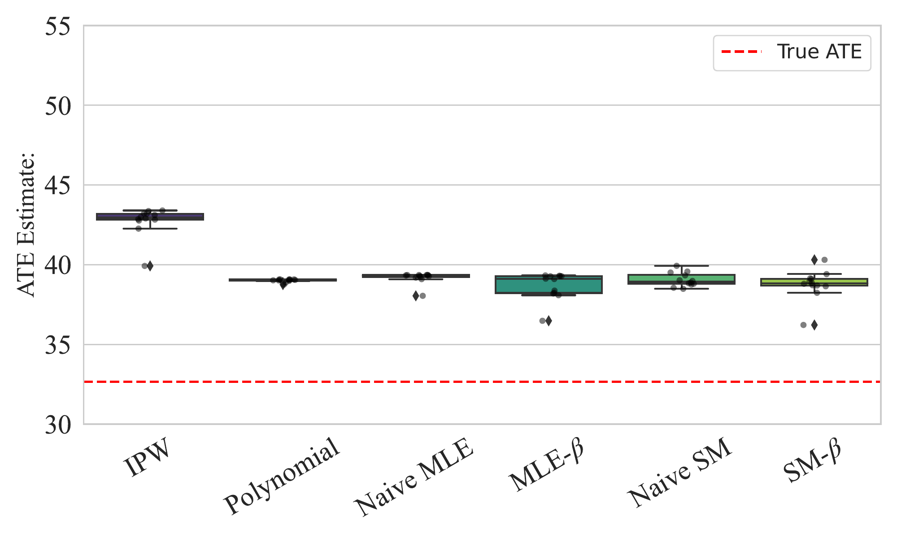

Towards a Holistic Understanding of Selection Bias for Causal Effect Identification
Necessary and sufficient conditions for identifying the average treatment effect when data is collected under selection bias
Selection bias is pervasive in observational studies: large-scale biobanks exhibit “healthy volunteer bias”, and clinical or survey samples can differ systematically from the population they are meant to represent. This work studies when the average treatment effect (ATE) over the whole population can be identified from data observed only on a selected sub-population. It gives necessary and sufficient conditions for ATE identifiability under selection bias, phrased as restrictions on the classes of propensity scores, covariate-outcome distributions, and selection probabilities — assumptions that are strictly weaker than those of existing general frameworks and that do not require knowing where in the causal graph selection occurs. The conditions recover known graphical criteria as special cases, and two practical estimators (maximum likelihood and score matching, each with a learned selection-correction term) are validated on synthetic data and a semi-synthetic cohort built from the All of Us research program.
The problem
The data we collect is often subject to selection bias: data points are preferentially included depending on some of the observed variables (Heckman 1979). In medical studies, patients who volunteer for trials may differ systematically from those who do not (Hernán et al. 2004); in surveys, respondents may not represent the broader population due to non-random participation (Stone et al. 2024). Large-scale biobanks famously exhibit a “healthy volunteer bias”, where respondents are healthier and of higher socio-economic status than the population they are meant to represent (Swanson 2012; van Alten et al. 2024).
This matters for causal inference because the average treatment effect (ATE) in the selected sub-population can differ sharply from the ATE in the whole population.

For high-status individuals the subsidy may have a small marginal effect — they likely already exercise — while for lower-status individuals it could matter much more, so naively reading the ATE off the observed sample gives a severely biased estimate.1
1 The paper restricts to the setting with no unobserved confounding (Y(t) \perp\!\!\!\perp T \mid X) and overlap in the unselected population — standard assumptions in causal inference. After selection, the observed distribution may no longer satisfy overlap.
Setup and definitions
Each unit has covariates X \in \mathbb{R}^d, a binary treatment T \in \{0,1\}, and a treatment-dependent outcome Y(T) \in \mathbb{R}. The target is the population ATE, \tau_{\mathcal{P}} \coloneqq \mathbb{E}_{\mathcal{P}}\!\left[\,Y(1) - Y(0)\,\right]. A binary selection variable S indicates whether a unit enters the dataset; we only observe \mathcal{P}(\mathbf{V}\mid S=1) over \mathbf{V} = \{X, Y, T\}.
Selection bias. Preferential inclusion of units such that \mathcal{P}(\mathbf{V}\mid S=1)\neq\mathcal{P}(\mathbf{V}). The paper’s definition is deliberately general — it is not restricted to collider- stratification (M-bias) as in much of the epidemiological literature (Greenland 2003; Elwert and Winship 2014).
Identifiability is stated in terms of three distributions: the propensity score P_{t\mid x} = \Pr(T=t\mid X=x), the covariate-outcome distribution P_{xy(t)} = \Pr(X=x, Y(t)=y), and the selection probability P_{s\mid xyt} = \Pr(S=1\mid X=x, Y(t)=y, T=t). The paper studies two notions: s-ATE-full, identifiability of the ATE in the whole population, and s-ATE-sub, identifiability within the selected sub-population. The work focuses mostly on s-ATE-full, which is harder because the estimand concerns partly unobserved data.
This is strictly harder than estimating the conditional ATE (CATE, \tau_{\mathcal{P}}(x) = \mathbb{E}_{\mathcal{P}}[Y(1)-Y(0)\mid X=x]), because the selection mechanism \Pr(S=1\mid\mathbf{V}) is unknown and may depend on the treatment or the outcome — not only on covariates (Imbens and Rubin 2015).
A unified identifiability condition
The central result restricts the classes of propensity scores \mathbb{P}_{t\mid x}, covariate-outcome distributions \mathbb{P}_{xy(t)}, and selection mechanisms \mathbb{S}. The Identifiability Condition under Selection requires that whenever two compatible distributions have different ATEs, they must also differ in the observed part of the distribution — so that the difference is detectable from the selected sample. Writing \alpha_P \coloneqq P_{s\mid xyt}/P(s), the observed product \alpha_P\, P_{t\mid x}\, P_{xy(t)} corresponds to the observable P(X,Y,T\mid S=1).
The paper proves this is exactly the right condition:
Characterization (s-ATE-full). The ATE \tau_P is identifiable from any observational distribution realizable with respect to (\mathbb{P}_{t\mid x}, \mathbb{P}_{xy(t)}, \mathbb{S}) if and only if those classes satisfy the Identifiability Condition under Selection.
Two instantiations are of practical interest, distinguishing deterministic selection (some region of the data space is fully censored) from non-deterministic selection (each point is retained with probability bounded below by d>0):
- Deterministic selection. Identifiability holds for c-weak-overlap propensity scores together with smooth enough outcome distributions — conditionals of exponential-polynomial form, P_{y(t)\mid x}\propto e^{f(x,y)} with f polynomial. This covers Gaussian and other common families. The intuition: deterministic selection produces a truncated version of the original distribution, and results from truncated statistics let one extrapolate back to the full distribution (Daskalakis et al. 2021).
- Non-deterministic selection. Identifiability holds for c-weak-overlap propensity scores when the covariate-outcome distribution belongs to the Gaussian, Laplace (light-tailed), Pareto, or log-normal (heavy-tailed) families.
Crucially, these conditions do not require knowing where selection occurs in the causal graph — in contrast to graphical approaches that must pinpoint the selection mechanism. The framework also recovers existing graphical results as special cases: the selection-backdoor criterion (Correa et al. 2019), outcome-dependent selection (Zhang et al. 2016), and the S-id criterion for the sub-population effect (Abouei et al. 2024) all follow from the condition. Compared to Zhang et al. (2016) — which identifies outcome-dependent selection only under a non-Gaussian additive-noise model — the distributional assumptions here are milder and extend identifiability to settings previously considered unidentifiable (Correa and Bareinboim 2017; Correa et al. 2019). The condition is related to that of Cai et al. (2025), but addresses a fundamentally different problem: overlap violations concern the support of the true distribution, whereas selection bias is a distortion of how data enters the analysis.
Estimation
When the distribution classes satisfy the deterministic or non-deterministic instantiation, the ATE is estimated in three stages: (1) fit the propensity score and isolate the region with common support, where data is subject only to non-deterministic selection; (2) estimate the conditional outcome distribution \hat{P}(y\mid x,t) while correcting for selection through a learned weight \hat\beta(x,y,t); (3) reweight the observed samples by 1/\hat\beta to recover the population density and compute the ATE by counterfactual inference.
Two estimators are given for the second stage. Maximum likelihood (MLE) minimizes the negative log-likelihood of the observed data, with a regularizer that keeps \log\hat\beta close to zero (i.e. selection as weak as the data allows). Score matching (SM) (Hyvärinen and Dayan 2005) instead matches the gradient of the log-density; because the intractable partition function depends only on x and t, it vanishes under \nabla_y and the observed score decomposes additively into a model score and a selection term \nabla_y \log\beta_\phi(x,y,t). The corrected versions are written MLE+\beta and SM+\beta.
Different estimators correct for different selection regimes:
| Estimator | Deterministic selection | Non-deterministic selection |
|---|---|---|
| Naive IPW | no | no |
| Polynomial | yes | no |
| MLE | yes | no |
| MLE +\beta | yes | yes |
| Score Matching | yes | no |
| SM +\beta | yes | yes |
Experiments
Synthetic data. Data is generated from Y=f(T,X,E) with X uniform and noise E drawn from different distributions, under both additive (Y=f(T,X)+E) and multiplicative (Y=(1+E)\cdot f(T,X)) settings, with both deterministic and non-deterministic selection applied. Each run uses N=5000 samples; after selection roughly 3000 remain, and each configuration is repeated 5 times. Across Gaussian and Laplace noise and both noise forms, the corrected methods MLE+\beta and SM+\beta consistently approach the true ATE, whereas naive IPW is badly biased (Figure 2, Figure 3).


ATE estimates (box plots over repeated runs) with both deterministic and non-deterministic selection. Naive IPW collapses far below the true ATE (dashed red), while the proposed methods — in particular the agnostic MLE+\beta and SM+\beta — recover it closely. From the original paper (Qiu et al., 2026).
The +\beta corrections generally reduce error relative to their uncorrected counterparts but at the cost of higher variance; MLE+\beta and SM+\beta perform comparably, with SM+\beta tending toward slightly lower variance.
Semi-synthetic data. The methods are evaluated on a cohort drawn from the All of Us Research Program, using Type 2 diabetes status as the exposure and BMI as the covariate. Because the true causal graph and hidden genetic confounders are unknown, a synthetic outcome Y=f(T,X)+E (additive Gaussian noise) is generated so that the ground-truth ATE is available while the covariate-treatment distribution remains real. Using N=10{,}000 samples (BMI restricted to (10,80)), non-deterministic selection leaves roughly 2500, repeated 5 times. The proposed methods again reduce bias relative to the baselines (Figure 4), though not completely — the authors attribute the residual gap to the complexity of the real-world distribution, e.g. very low propensity scores (\sim 0.05) that make overlap weak.

Takeaways
The paper moves the analysis of selection bias from graphical criteria — which must locate where selection happens — to a distributional characterization: necessary and sufficient conditions on the propensity, covariate-outcome, and selection classes that are strictly weaker than those of prior general frameworks and independent of the graph structure. This yields identifiability in settings previously deemed unidentifiable, recovers known graphical criteria as special cases, and comes with practical MLE and score-matching estimators. The main limitation is the distributional assumptions themselves; the authors point to relaxing them, and to extensions toward causal discovery and experimental design, as future work.
Citation
@inproceedings{qiu2026,
author = {Qiu, Yiwen and Kovačević, Filip and Huang, Shimeng and
Spirtes, Peter and Locatello, Francesco},
title = {Towards a {Holistic} {Understanding} of {Selection} {Bias}
for {Causal} {Effect} {Identification}},
booktitle = {Proceedings of the 43rd International Conference on
Machine Learning (ICML)},
date = {2026-05-13},
url = {https://arxiv.org/abs/2605.13430}
}